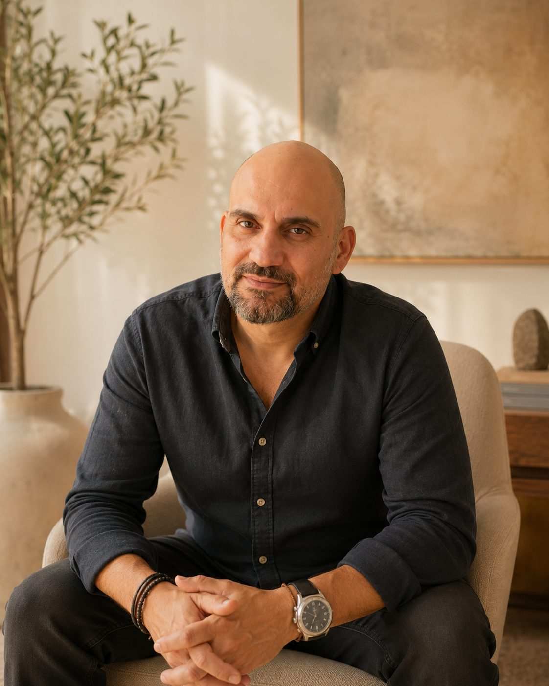
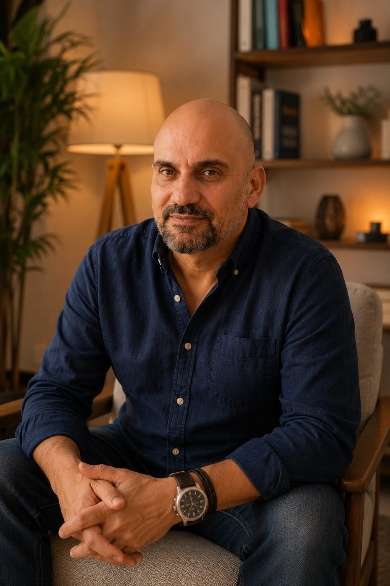
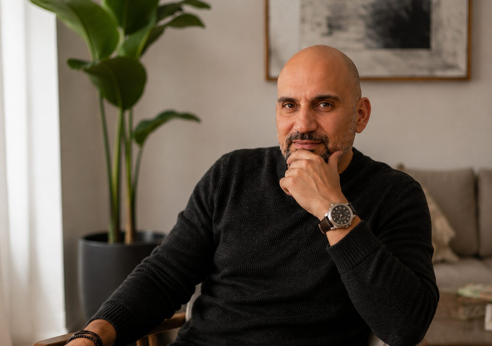

No llegué a la terapia
para enseñar.
Llegué porque primero tuve que encontrarme a mí. Esta es la historia de cómo pasé de intentar arreglarme a intentar conocerme — y de cómo esa diferencia se convirtió en mi trabajo.
"No necesitas convertirte en alguien mejor. Necesitas dejar de ser quien aprendiste que debías ser."
Si algo ha marcado mi vida desde niño ha sido una pregunta: ¿por qué el ser humano hace cosas que sabe que le hacen sufrir? Nunca me bastó con las respuestas fáciles. Mientras otros aceptaban que las cosas eran así, yo necesitaba entender qué había debajo. Debajo del miedo. Debajo del amor. Debajo de las máscaras que todos aprendemos a llevar.
Mi primera profesión no tuvo nada que ver con la psicología. Me formé en informática, dirigí empresas, emprendí proyectos, asumí puestos de responsabilidad muy joven. Desde fuera, mi vida avanzaba exactamente hacia donde se supone que debía hacerlo. Pero por dentro seguía sintiendo la misma inquietud.

Con diecinueve años atravesé un proceso de ansiedad y depresión. Hoy puedo decir algo que entonces me habría parecido imposible: fue uno de los mayores regalos de mi vida.
No porque fuera agradable — lo fue todo menos eso. Sino porque me obligó a hacerme preguntas que jamás me habría hecho si todo hubiera seguido funcionando. La medicina me ofrecía una solución para aliviar el síntoma. Yo necesitaba entender por qué había aparecido. Aquella búsqueda cambió el rumbo de mi vida.

Durante años estudié prácticamente todo lo que caía en mis manos: cuerpo, meditación, filosofía oriental, distintas terapias y enfoques de desarrollo personal. Buscaba entender qué hace que alguien entregue su vida y su criterio a algo o a alguien más grande que él.
Lo que descubrí fue incómodo: la dependencia no siempre tiene nombre de secta o de gurú. A veces se llama pareja. A veces trabajo. A veces espiritualidad. A veces éxito. Y muchas veces se llama simplemente sociedad.
Había aprendido mucho, pero seguía sintiendo que faltaba algo. Hasta que conocí la Terapia Gestalt. Fue la primera vez que dejé de intentar arreglarme para empezar a conocerme.
Después llegaron años de formación, supervisión y trabajo personal — pero, sobre todo, llegaron miles de horas mirando de frente mis propias contradicciones. No creo en los terapeutas que hablan desde un pedestal. Creo en los que siguen caminando.
Las personas casi nunca vienen por el problema que dicen tener. La ansiedad suele esconder una decisión que lleva años esperando. Los celos rara vez hablan de la pareja. La falta de autoestima suele ser la consecuencia de sostener un personaje imposible.
Ahí apareció la idea que acabaría convirtiéndose en el centro de todo mi trabajo: el personaje. Todos construimos uno — y el problema no es haberlo construido, sino olvidar que era solo una estrategia de supervivencia.
No hago terapia para darte respuestas. La hago para que aparezcan las preguntas que llevas años evitando.
Soy un espejo directo. No te voy a ayudar a sentirte mejor rápido — te voy a ayudar a verte, con una mirada quirúrgica pero con cuidado. Porque la idea no es destruir tu personaje: es que puedas abrazarlo, entenderlo, y devolverle el sitio que le corresponde.

"El problema no es haberlo construido. El problema es olvidar que era solo una estrategia para sobrevivir — y acabar creyendo que eres tú."
Más allá de los títulos, mi mayor formación han sido los años de trabajo personal, las miles de horas de consulta y todas las personas que han confiado en mí. Aun así, parte de mi recorrido incluye:
- Formación en Terapia Gestalt
- Formación en Terapia Sistémica
- Formación en trabajo corporal
- Formación propia en gestión emocional y habilidades sociales, creada e impartida en Madrid y Barcelona en varias ediciones
- Más de veinte años acompañando procesos individuales y grupales de desarrollo personal
Después de miles de sesiones individuales, grupos, talleres y procesos de acompañamiento, sigo sintiendo exactamente la misma curiosidad que tenía de niño. La diferencia es que ahora ya no busco respuestas solo para mí. Mi trabajo es caminar junto a las personas mientras descubren quiénes son cuando dejan de interpretar el personaje que aprendieron a ser.
Hablemos →